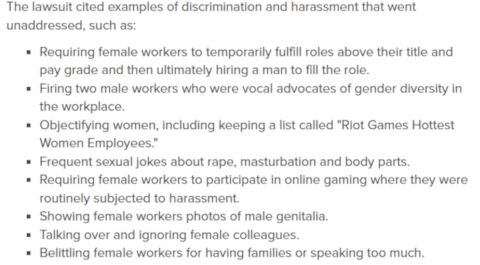

The Female Experience of Toxicity in League of Legends
Game Design & Gender Disparity
Game Design
Game design may also instigate the community’s toxicity; one crucial issue lies in LoL’s portrayal
of their female characters. Generally, video games adhere to the stereotypical standards of
perpetuating unrealistic body images and sexualization. Female characters are frequently crafted
with thin bodies, large breasts, and small waists, reflecting societal beauty norms that have been
ingrained within the gaming culture. Although numerous video games portray their female characters
with incompetent characteristics or aligning with the “damsel in distress” notion (Lamensch 2023),
LoL does not, and rather presents certain empowering backstories for their champions. For example,
Akali is an assassin with no master as she abandoned the Kinkou Order (ancient religious organization)
and her title of the “Fist of Shadow,” yet she continues to strike alone for the sole purpose of
defending her country Ionia (Riot Games). Regardless of her honorable nature in the game’s canon storyline,
players continue to sexualize her and every other female character. This type of behavior is promoted due
to LoL’s presentation of Akali in official art, in-game skins, and her role in their K-pop group K/DA.
Akali’s body type and visuals align with the typical images of women in games, and rather than accentuating
her remarkable backstory of independence, the company advertises her physical appearance. Virtual depictions
not only influence the way female characters are perceived within the gaming world but also mold real-world
attitudes and behaviors. In deWinter and Kocurek's exploration of exclusionary cultures in the gaming industry,
they shed light on how these representations contribute to the toxic environment (deWinter and Kocurek 2017, 62).
The objectification of female champions in LoL reinforces traditional gender norms, fostering a corrupt domain
where female gamers become susceptible targets for harassment. Hypersexualized depictions cultivate a mindset
that associates female characters primarily with their physical attributes, rather than their skills or
contributions to the gameplay.
The impact of these objectifying portrayals extends beyond the gaming realm, influencing real-world attitudes
and behaviors of male players. With LoL being a male-dominant game, the toxic culture is constantly being
encouraged and indulged, thus negatively morphing their attitudes. Males consistently exposed to objectified
perceptions of female characters are more likely to view sexual aggression as acceptable behavior, contributing
to the establishment of rape-supportive attitudes (deWinter and Kocurek 2017, 63). The connection between virtual
representations and real-world behaviors underscores the significance of addressing gender stereotypes within
gaming. In the phenomenon of “victim blaming,” women who have been sexually assaulted are blamed and criticized
for their actions, choice of clothing, and every little aspect of the event (deWinter and Kocurek 2017, 63).
People will claim that women who wear revealing clothing are inviting a pack of wolves to devour them, yet women
fully clothed from head to toe still experience the violent atrocity of rape. The virtual world contributes to
these unethical mindsets and LoL is no exception; its environment is saturated with objectified portrayals of women,
which not only reinforces degrading behavior and harassment towards women within the gaming community but also
extends its impact to broader societal norms. To mitigate toxicity in LoL, it is crucial to first consider those
responsible for the visual concepts of champions as prevailing gender norms are embedded in the game's design.
Through redefining the preconceived image of female characters in games and cultivating a more diverse group of
game developers, a more inclusive and respectful gaming culture can be promoted.
Gender Disparity: Inside & Outside the Game
Moreover, the historical myth that male players exceedingly dominate gaming communities is no longer relevant in
today’s technological society, yet continues to be used as a prime explanation for toxicity. For the year 2023 in
the United States alone, 45 percent of gamers are women while 55 percent are men (Howarth 2023). Although gamer
demographics indicate that female participation is nearly on par with males, the mere 30 percent of women among
industry professionals suggest otherwise (Clement 2023). As a consequence of unequal treatment, discrimination,
and stereotypes ingrained in a workplace context, the lack of female representation inadvertently mirrors gaming
platforms. An examination of gender disparity in LoL reveals that female players often find themselves relegated
to specific roles by male friends and partners, reinforcing traditional gender norms of dominant men and submissive
women (Ratan et al. 2015, 444). They are most frequently confined to the role of "support" rather than more
progressive roles like "ADC (attack damage carry)," which overall influences a female gamer’s perception of her own
capabilities. Male gamers are not the only ones who encourage this phenomenon; in LoL’s 2021 roster of 154 champions,
37.5 percent of female champions had distinct roles of “support” in contrast to only 12.77 percent of male champions
(Leo 2021). For an opposite analysis, the designated role of “fighter” was associated with 53.19 percent of male
champions, and only 26.79 percent of female champions (Leo 2021). Although 2023’s roster increased to 162 champions,
with Riot Games regularly releasing three to five new ones each year, the vast gap has yet to subside as 99 are male
and 63 are female. To validate the substantial amount of male characters, gamers on web forums such as Reddit and
Twitter emphasize how LoL constantly releases new skins for female characters, which they claim “levels” out the
field for even representation. However, nearly every concept art for female skins overly sexualizes the character,
thus, Riot Games monetarily exploits their female representations, specifically body images, for commercialization.
Along with the overrepresentation of female champions in the "weaker" category and the underrepresentation in
“dominant” roles reflects a systemic bias within the game's design. Regarding future releases and reworks of champions,
Riot Games must shift its focus to establishing moral representations that go beyond perpetuating traditional gender
norms, creating a gaming environment that is inclusive and reflective of the diverse talents and abilities of all players.
In addition, the stark gender disparity evident in the gaming industry itself poses more reasons as to why LoL’s platform
is a prevailing outlet for toxicity. The lack of representation extends beyond the gaming screen into the development
side of the industry, where female professionals are alarmingly underrepresented and suppressed. Statistics from 2022
emphasize that the pool of game developers worldwide only has around 30 percent of women, whereas the rest of the industry
is run by predominantly white men (Lamensch 2023). In comparison to earlier years, more female employees have been gradually
integrated into the gaming industry, yet their mere existence in these work settings seemingly “provokes” irrational and
dehumanizing behaviors from male colleagues and bosses. A common occurrence involves hiring women, not because of their
extensive qualifications and innovative skills, but for the sole purpose of looking pretty and satisfying male employees,
designating them as trophies rather than humans (deWinter and Kocurek 2017, 65). A woman’s mere existence, which also
depends on her scale of beauty according to the stereotypical male gaze, indirectly provides an outlet for pleasuring
them. How are female employees expected to work in an environment where everyone perceives her in the same manner wolves
look at their prey? Not only is sexism prevalent in terms of bodily objectification and the face value of women in
professional spaces but also the idea that their abilities can never reach the same potential as men. Regardless of their
promising educational backgrounds and experience, the majority of females seeking jobs within the gaming industry are
denied primarily based on gender discrimination, and on the rare occasion they are accepted, they are immediately pushed
towards (conceptualized “female-oriented”) fields of art and design rather than programming or marketing (deWinter and
Kocurek 2017, 57). Stigmatized as less competent workers from the start, most women willingly set aside their passion for
video games, and are likely to reconsider working for this industry as they understand that the integrated biases,
objectification, and male ignorance will only result in mental turmoil. The toxic masculinity trait of men maintaining
liberating forces of power reverses society’s development of equal rights and all feminist movements as it reinstates
traditional hierarchies back into corporate settings. The embedded fear of another human being, one with breasts and
a vagina, taking over their positions and exhibiting more competent skills may ultimately lead to men maximizing hostile
behaviors.
Riot Games Lawsuit

Focusing on the specific case of unequal employee dynamics in the gaming companies, Riot Games, a successful developer
of both League of Legends and Valorant, was involved in a high-profile lawsuit in 2018. Taking place in Los Angeles,
legal action was initiated by current and former employees who alleged a toxic work culture marked by gender discrimination,
sexual harassment, and unequal pay. The plaintiffs contended that the company fostered an environment where women faced
systemic obstacles in their professional advancement, with a prime example where female employees were to temporarily
fulfill roles (above their titled jobs and pay grades) until a man was permanently hired to replace them (Shepherd 2023).
They further discussed the company’s preference for uplifting male employees, such as assigning them more compensating jobs,
frequent promotions, and overall greater pay (Shepherd 2023). The behaviors male employees frequently exhibited include
sexual jokes on rape, masturbation, and body parts, maintaining a list of “Riot Games Hottest Women Employees,” sharing
inappropriate and nonconsensual images of genitalia, and more (Shepherd 2023). The lawsuit shed light on the pervasive
gender disparity and foul play within the gaming industry and prompted a need for investigation into workplace practices
and inclusivity. Riot Games paid $100 million to settle the lawsuit with large compensations (estimated average of $49,709)
for all 1,548 female employees and temporary contractors (Shepherd 2023). To address their workplace misconduct, the
company agreed to invest $18 million into funding diversity, equity, and inclusion programs for the following three years
(Shepherd 2023). Prevalent harassment of women in the industry, including verbal and psychological abuse, misogyny, and
sexual aggression, explains the vast gender disparity. The lack of female representation among industry professionals
perpetuates the cycle of toxicity seen in gaming environments as the absence of diverse voices within the development
process inadvertently reinforces harmful stereotypes and fails to address the unique needs and experiences of female
participants. The lawsuit underscores how toxic gaming communities may inherently stem from the industry itself, thus
reflecting the consequences of a lack of workplace inclusion. While Riot Games might have only implemented corrective
measures due to this extreme situation, many other game companies also need to reflect on their work environment dynamics,
habits, and diversity.